Artifactory disappears into an everyday Feed
The user signs in once, lands in useful content, and calls on Artifactory through familiar Feed actions. Delegation, bundles, and agent plumbing run automatically; authority details remain available from an optional menu.
Walk through everyday Feed
Choose a step to move between the mobile views. The primary path is sign in → automatic setup → Feed; Ask, artifact detail, and access controls are entered from Feed when needed.
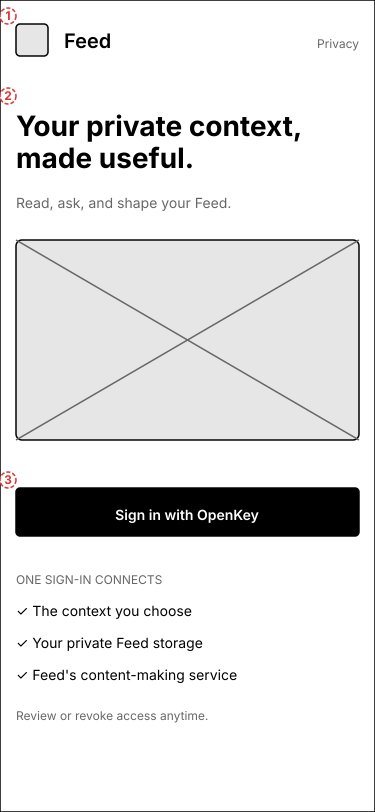
Step 1 of 6 · First visit
Sign in once
The user sees one product promise and one OpenKey action. Feed explains outcomes without turning authority into a setup project.
What the user does
- Reads what Feed is for.
- Signs in with OpenKey.
- Sees where access can be reviewed later.
Manifests, DIDs, bundles, capability paths, and separate service approvals.
1.Sign in once
A single product promise and a single OpenKey action. The supporting disclosure explains outcomes in user terms without presenting a permission-management task.
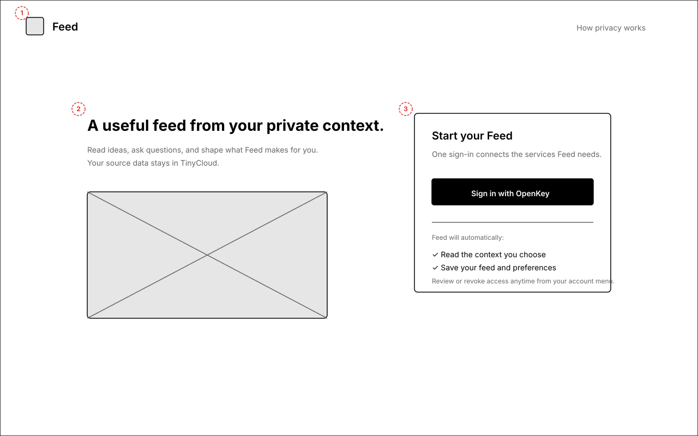
Annotations
- 1 — Minimal product header; privacy explanation is available but secondary.
- 2 — User value appears before infrastructure.
- 3 — One OpenKey sign-in establishes normal authority automatically.
- 4 — Short disclosure says what connects and where access can be revoked.
2.Automatic setup
A transient status view appears only while setup takes long enough to notice. It describes outcomes, not DIDs, resources, bundles, or manifests.
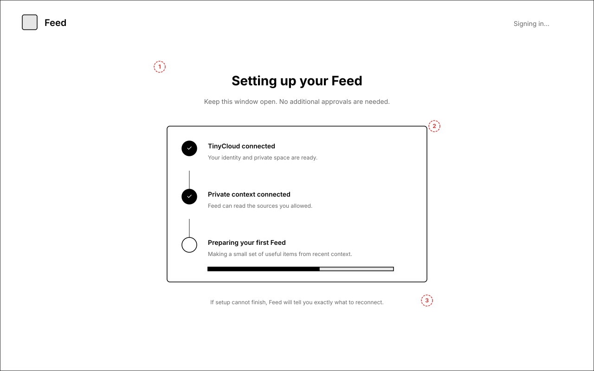
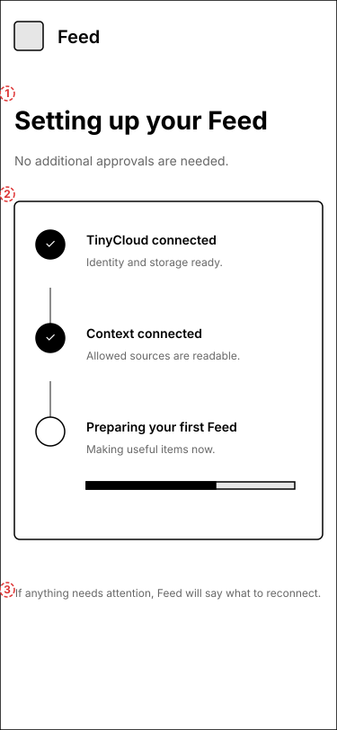
Annotations
- 1 — Calm title explicitly says there are no more approvals.
- 2 — Three plain-language milestones map to identity, context, and first output.
- 3 — Recovery contract promises a concrete reconnect instruction if needed.
3.Feed home
The default destination is content. Artifactory appears only through the useful artifacts it creates and a quiet activity summary.
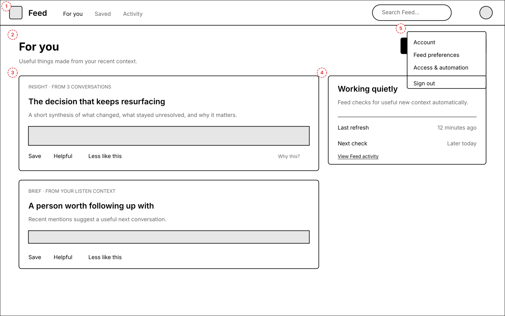
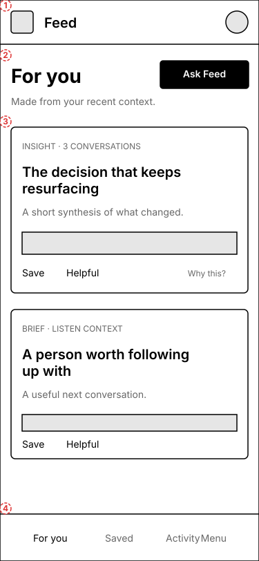
Annotations
- 1 — Familiar Feed navigation; account avatar owns advanced controls.
- 2 — “Ask Feed” is the primary way to intentionally invoke Artifactory.
- 3 — Generated artifacts carry source summaries and direct feedback actions.
- 4 — Quiet status says when Feed last worked without becoming an ops dashboard.
- 5 — Access & automation lives in the optional account menu.
4.Ask Feed
A user asks a normal question. Progress is visible in terms of the work being done, while the allowed context remains inspectable and changeable.
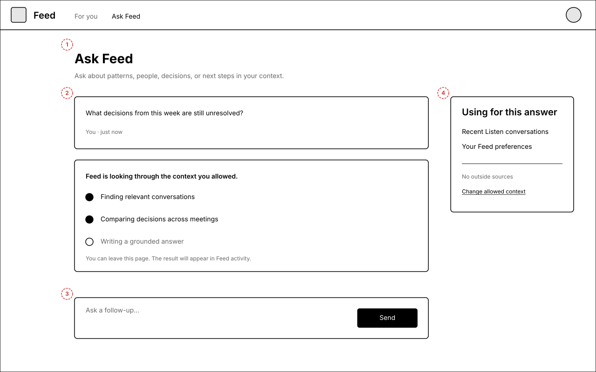
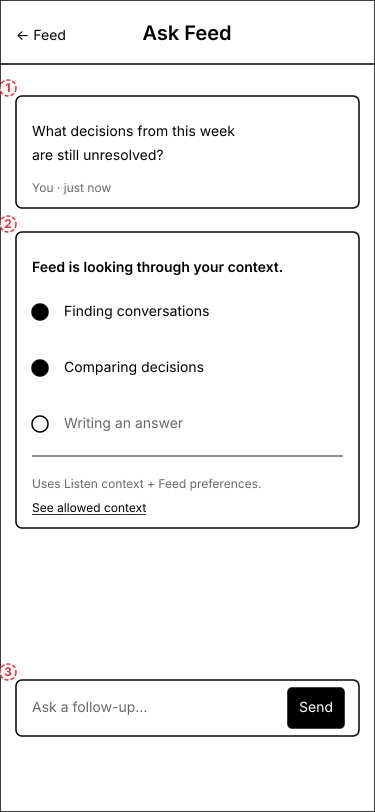
Annotations
- 1 — The user’s question anchors the view.
- 2 — Progress names evidence work, not agent stages or tool calls.
- 3 — Follow-up composer remains available.
- 4 — Context boundary discloses which private sources are in scope.
5.Artifact detail
The artifact is readable first. Provenance is translated into “why you’re seeing this,” source conversations, and quoted moments.
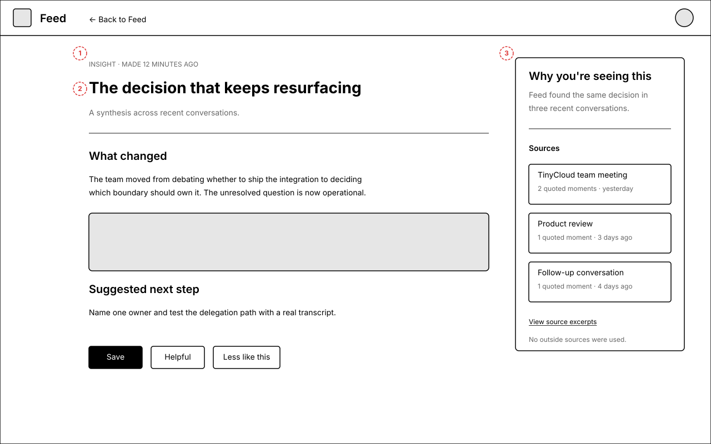
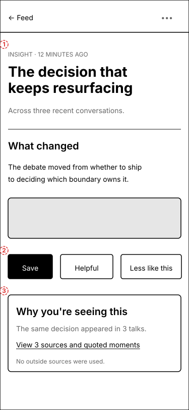
Annotations
- 1 — Clear return to Feed preserves orientation.
- 2 — Artifact body and feedback actions dominate the layout.
- 3 — Human-readable provenance expands into sources and quoted moments.
6.Access & automation
This optional settings view is the only everyday-user surface for the authority chain. It starts with health and meaningful abilities; raw delegation details remain collapsed.
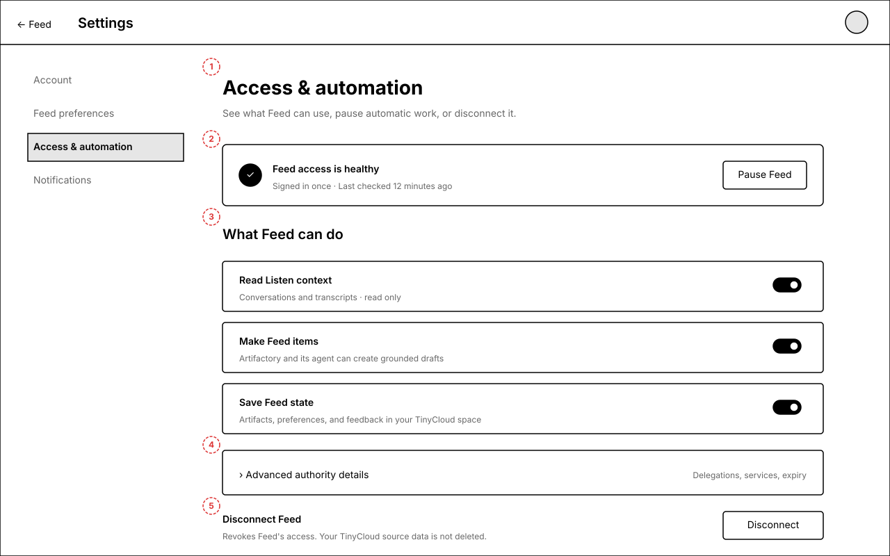
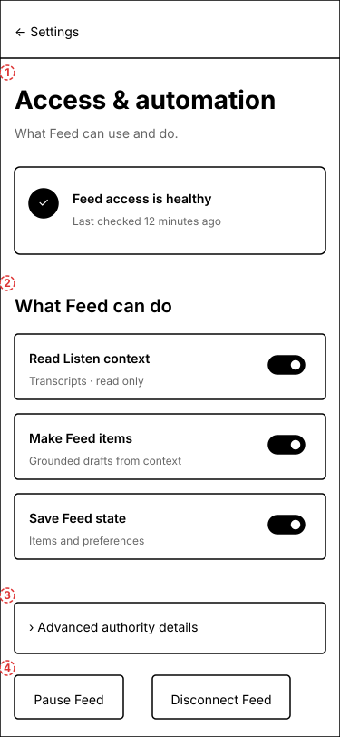
Annotations
- 1 — Optional settings navigation, never a first-run gate.
- 2 — Health summary answers “is Feed connected?”
- 3 — Abilities are named in user terms: read context, make items, save state.
- 4 — DIDs, delegations, expiry, and services live under Advanced details.
- 5 — Pause and disconnect are understandable escape hatches.
Hunter’s proposed Feed features
The conversation repeated a few ideas through different examples. This short list groups the underlying features so we can discuss the product shape without treating every content type as a separate app.
- 1. Feed switcher
Move between focused personal, curated, work, health, or group feeds. Each feed has its own sources and preferences.
NEARER TERM - 2. Curated discovery
Find original outside articles using interests learned from private context and explicit reactions. AI selects; it does not rewrite the source.
NEARER TERM - 3. Shared group feed
A shared space where members contribute items and collective activity shapes what the group sees.
NEARER TERM - 4. Share to a group
Copy one useful item from a personal Feed into a chosen group without exposing the private conversations behind it.
NEARER TERM - 5. Invite and manage people
Create a group Feed and give members understandable view, react, and share roles.
NEARER TERM - 6. Group learning and rules
Use group reactions and shared items to tune ranking; later add narrow, reviewable suggestions or automatic-sharing rules.
NEARER TERM + LATER EXTENSION - 7. Budgeted physical outputs
Give a workflow a spending limit and turn a period of life into a reviewed physical artifact such as a photo book.
FUTURE CONCEPT - 8. Human-readable agent configuration
See what makes the Feed, how often each routine runs, its sources and likely cost, then edit or pause it without workflow code.
OPTIONAL ADVANCED CONTROL
Walk through Hunter’s feature proposals
These are mobile product explorations, not additions to the committed everyday journey. Use the segmented navigation, arrow keys, Back/Next, or swipe on the phone to compare them.
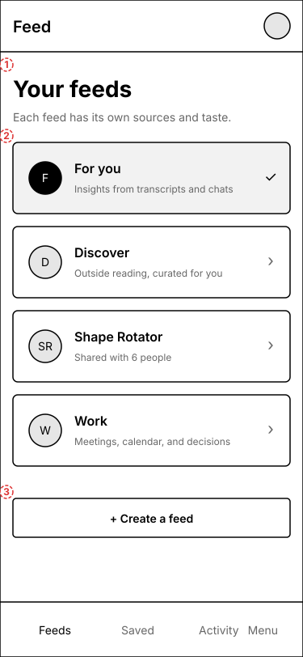
Feature 1 of 8 · Navigation model
Choose a focused feed
Feeds become small, focused apps with their own sources and taste instead of one undifferentiated stream.
Product behavior
- Sees personal, curated, work, and group feeds together.
- Understands what sources shape each feed.
- Creates a new feed without configuring infrastructure.
A feed is a view plus preferences and source scope—not a separate identity or permission ceremony every time.
Hunter feature pages · mobile gallery
All eight pages are mobile-only and intentionally lo-fi. Click any page to inspect it at full size.
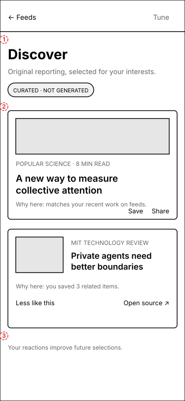
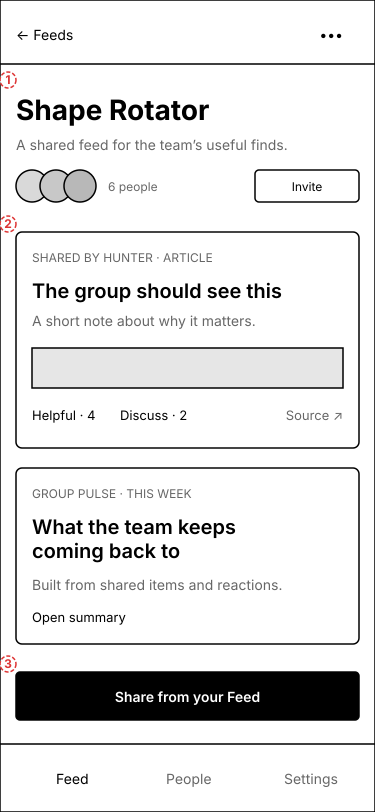
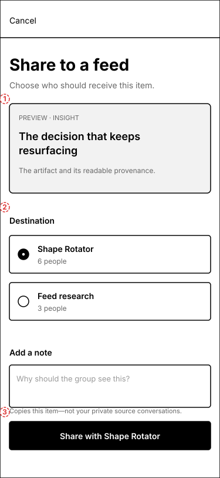
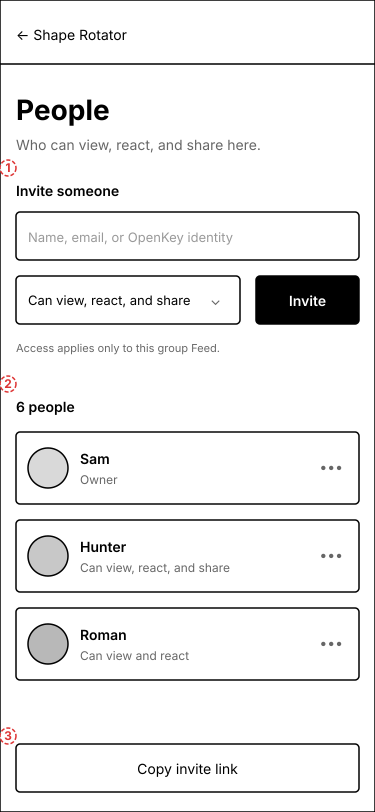
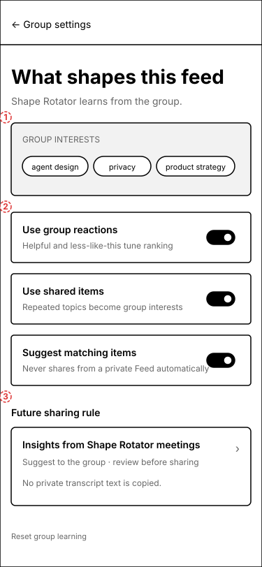
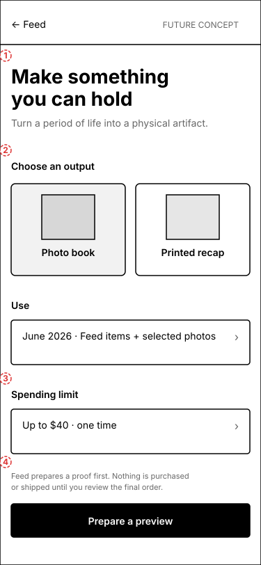
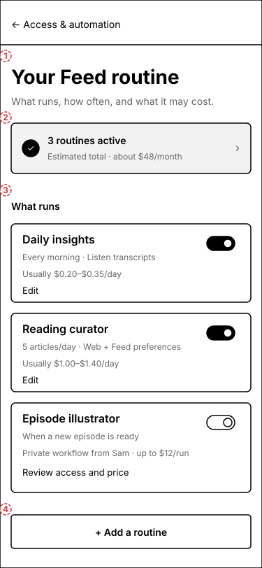
Open questions for critique
- Should automatic setup render at all when it finishes in under two seconds, or should Feed go directly to a skeleton feed?
- Should Ask Feed be a dedicated view, an inline composer above the feed, or both?
- Does the “Working quietly” rail provide useful confidence, or does it already expose too much machinery?
- Should turning off “Make Feed items” pause scheduled runs while preserving Ask Feed, or disable both?
- Should source conversation titles be visible by default, given screen-sharing privacy?
- Does Activity deserve primary navigation, or should it remain behind the account menu until there is a failure?
- Should multiple feeds use a dedicated switcher page, horizontal swipe, or a compact menu from Feed home?
- Should curated outside reading remain a separate Discover feed, or appear sparingly inside the personal Feed?
- When an artifact is shared, is a provenance summary enough, or should the sender choose individual quoted moments to include?
- How visible should collective preference learning be to group members, and who can reset or tune it?
- Should automatic group sharing exist at all, or should the first version only suggest items for a person to approve?
- Is budgeted physical fulfillment part of Feed’s credible horizon, or better treated as a separate agent product?
- Should “Your Feed routine” live under Access & automation, or deserve a direct entry from Feed home once users actively tune it?